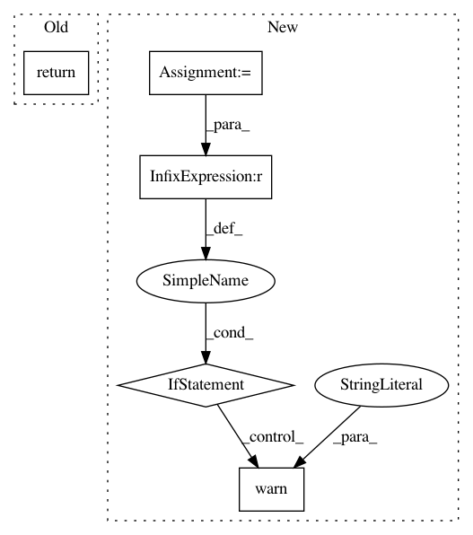

563f6564727f0b5c3d945d82402bcb7766dee00a,aif360/sklearn/metrics/metrics.py,,specificity_score,#,159
Before Change
the data should be binary.
sample_weight (array-like, optional): Sample weights.
return recall_score(y_true, y_pred, pos_label=neg_label,
sample_weight=sample_weight)
def base_rate(y_true, y_pred=None, pos_label=1, sample_weight=None):
rCompute the base rate, :math:`Pr(Y = \text{pos_label}) = \frac{P}{P+N}`.
After Change
sample_weight=sample_weight)
tn, fp, fn, tp = MCM.ravel()
negs = tn + fp
if negs == 0:
warnings.warn("specificity_score is ill-defined and being set to 0.0 "
"due to no negative samples.", UndefinedMetricWarning)
return 0.
return tn / negs
def base_rate(y_true, y_pred=None, pos_label=1, sample_weight=None):
rCompute the base rate, :math:`Pr(Y = \text{pos_label}) = \frac{P}{P+N}`.
In pattern: SUPERPATTERN
Frequency: 3
Non-data size: 5
Instances
Project Name: IBM/AIF360
Commit Name: 563f6564727f0b5c3d945d82402bcb7766dee00a
Time: 2020-02-19
Author: hoffman.sc@gmail.com
File Name: aif360/sklearn/metrics/metrics.py
Class Name:
Method Name: specificity_score
Project Name: scikit-image/scikit-image
Commit Name: 54bf5e9f9daf14d281483ad0dbafcf36f44f5ed6
Time: 2020-02-11
Author: rfezzani@gmail.com
File Name: skimage/restoration/non_local_means.py
Class Name:
Method Name: denoise_nl_means
Project Name: librosa/librosa
Commit Name: 2c730101897bd3f52e149ac95d56820002f5e589
Time: 2020-06-04
Author: bmcfee@users.noreply.github.com
File Name: librosa/display.py
Class Name:
Method Name: __coord_cqt_hz